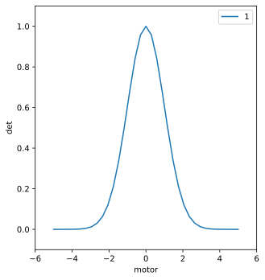

Lesson 4: Basic scan (& plot) of scaler vs. motor#
Preparation
``instrument`` package
Make sure the instrument package is in the same directory as this jupyter notebook. The instrument package included with this lesson is a brief version of the standard package used with any APS instrument. Since the notebook is for teaching, it does not connect with any mongodb database. The scans are not kept by the databroker. However, every scan is saved to a SPEC data file as described when the instrument package is loaded.
[1]:
from instrument.collection import *
I Wed-13:14:37 - ############################################################ startup
I Wed-13:14:37 - logging started
I Wed-13:14:37 - logging level = 10
I Wed-13:14:37 - /home/prjemian/Documents/projects/BCDA-APS/bluesky_training/lessons/instrument/collection.py
I Wed-13:14:37 - /home/prjemian/Documents/projects/BCDA-APS/bluesky_training/lessons/instrument/mpl/notebook.py
Activating auto-logging. Current session state plus future input saved.
Filename : /home/prjemian/Documents/projects/BCDA-APS/bluesky_training/lessons/.logs/ipython_console.log
Mode : rotate
Output logging : True
Raw input log : False
Timestamping : True
State : active
I Wed-13:14:37 - bluesky framework
I Wed-13:14:37 - /home/prjemian/Documents/projects/BCDA-APS/bluesky_training/lessons/instrument/framework/check_python.py
I Wed-13:14:37 - /home/prjemian/Documents/projects/BCDA-APS/bluesky_training/lessons/instrument/framework/check_bluesky.py
I Wed-13:14:38 - /home/prjemian/Documents/projects/BCDA-APS/bluesky_training/lessons/instrument/framework/initialize.py
I Wed-13:14:39 - /home/prjemian/Documents/projects/BCDA-APS/bluesky_training/lessons/instrument/framework/metadata.py
I Wed-13:14:39 - /home/prjemian/Documents/projects/BCDA-APS/bluesky_training/lessons/instrument/framework/callbacks.py
I Wed-13:14:40 - writing to SPEC file: /home/prjemian/Documents/projects/BCDA-APS/bluesky_training/lessons/20201216-131440.dat
I Wed-13:14:40 - >>>> Using default SPEC file name <<<<
I Wed-13:14:40 - file will be created when bluesky ends its next scan
I Wed-13:14:40 - to change SPEC file, use command: newSpecFile('title')
[2]:
# for jupyterlab ...
# https://stackoverflow.com/a/51932652
%matplotlib inline
get a motor and scaler from the ophyd simulators
[3]:
from ophyd.sim import motor as m1
from ophyd.sim import det as scaler
scan the scaler v. the motor
[4]:
RE(bp.scan([scaler], m1, -5, 5, 35))
Transient Scan ID: 1 Time: 2020-12-16 13:14:40
Persistent Unique Scan ID: '61993812-94b5-4701-be35-6c2f06f7e238'
New stream: 'primary'
+-----------+------------+------------+------------+
| seq_num | time | motor | det |
+-----------+------------+------------+------------+
| 1 | 13:14:40.4 | -5.000 | 0.000 |
| 2 | 13:14:40.5 | -4.706 | 0.000 |
| 3 | 13:14:40.5 | -4.412 | 0.000 |
| 4 | 13:14:40.6 | -4.118 | 0.000 |
| 5 | 13:14:40.6 | -3.824 | 0.001 |
| 6 | 13:14:40.7 | -3.529 | 0.002 |
| 7 | 13:14:40.7 | -3.235 | 0.005 |
| 8 | 13:14:40.8 | -2.941 | 0.013 |
| 9 | 13:14:40.8 | -2.647 | 0.030 |
| 10 | 13:14:40.8 | -2.353 | 0.063 |
| 11 | 13:14:40.9 | -2.059 | 0.120 |
| 12 | 13:14:40.9 | -1.765 | 0.211 |
| 13 | 13:14:41.0 | -1.471 | 0.339 |
| 14 | 13:14:41.0 | -1.176 | 0.501 |
| 15 | 13:14:41.1 | -0.882 | 0.678 |
| 16 | 13:14:41.1 | -0.588 | 0.841 |
| 17 | 13:14:41.1 | -0.294 | 0.958 |
| 18 | 13:14:41.2 | 0.000 | 1.000 |
| 19 | 13:14:41.2 | 0.294 | 0.958 |
| 20 | 13:14:41.2 | 0.588 | 0.841 |
| 21 | 13:14:41.3 | 0.882 | 0.678 |
| 22 | 13:14:41.3 | 1.176 | 0.501 |
| 23 | 13:14:41.3 | 1.471 | 0.339 |
| 24 | 13:14:41.4 | 1.765 | 0.211 |
| 25 | 13:14:41.4 | 2.059 | 0.120 |
| 26 | 13:14:41.4 | 2.353 | 0.063 |
| 27 | 13:14:41.5 | 2.647 | 0.030 |
| 28 | 13:14:41.5 | 2.941 | 0.013 |
| 29 | 13:14:41.5 | 3.235 | 0.005 |
| 30 | 13:14:41.6 | 3.529 | 0.002 |
| 31 | 13:14:41.6 | 3.824 | 0.001 |
| 32 | 13:14:41.6 | 4.118 | 0.000 |
| 33 | 13:14:41.7 | 4.412 | 0.000 |
| 34 | 13:14:41.7 | 4.706 | 0.000 |
| 35 | 13:14:41.7 | 5.000 | 0.000 |
+-----------+------------+------------+------------+
generator scan ['61993812'] (scan num: 1)
[4]:
('61993812-94b5-4701-be35-6c2f06f7e238',)
